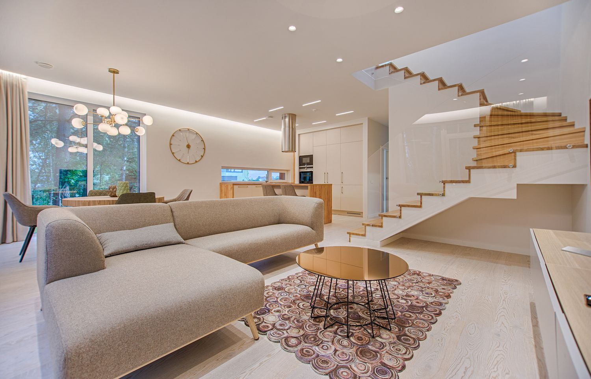

Сайты для живого бизнеса.
Проектирую структуру, пишу код и довожу сайт до запуска. Здесь можно посмотреть, как одна задача получает разное решение в пяти отраслях.
Посмотреть работы
ИЗБРАННЫЙ КОНЦЕПТNOVAInterior
Проекты
Пять демонстрационных сайтов. Каждый можно открыть и попробовать в работе.
От задачи
до запуска.
Я разрабатываю сайты для локального бизнеса. Начинаю со сценария посетителя и подбираю под него содержание, визуальный язык и техническое решение.
Лендинг
Одна услуга, один продукт или запуск нового направления с понятной формой обращения.
Сайт компании
Страницы услуг, информация о команде и удобные способы связи.
Обновление сайта
Пересборка структуры, мобильная версия и доработка существующих форм.
Как идёт работа
Знакомство
Обсуждаем аудиторию, материалы и задачи сайта.
Прототип
Согласуем путь посетителя и структуру страниц.
Разработка
Собираем интерфейс, контент и интеграции.
Запуск
Проверяем формы, мобильные экраны и передачу проекта.
Частые вопросы
Что подготовить к первой встрече?
Опишите задачу, аудиторию и желаемый срок. Если есть сайт или фирменный стиль, приложите ссылки.
Как определяются цена и сроки?
После обсуждения структуры и функций вы получите смету и план работ до начала разработки.
Можно ли посмотреть проекты на телефоне?
Да. Откройте страницу проекта и перейдите к интерактивному демосайту.
Обсудим ваш сайт?
Расскажите в Telegram, чем занимается ваш бизнес и какой сайт вам нужен.
Написать в Telegram